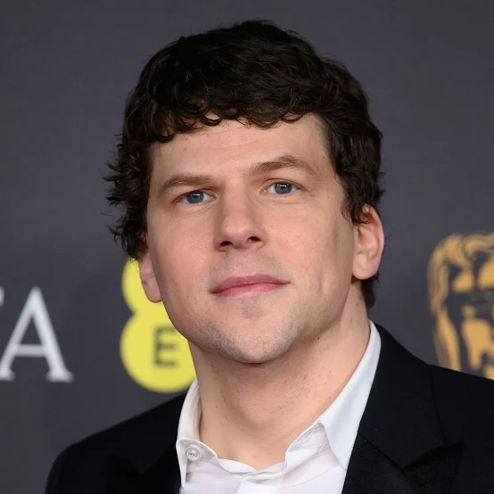

| Mark Zuckerberg é o criador do Facebook, mostrado no filme como ambicioso e socialmente introvertido. Na vida real, ele é inteligente e focado em tecnologia e negócios. |

| 
| Eduardo Saverin é cofundador e amigo de Mark, que acaba perdendo parte de suas ações. Na vida real, ele recebeu compensação e manteve certa amizade com Mark. |
| 
| Cameron e Tyler Winklevoss criaram a ideia do HarvardConnection e processaram Zuckerberg. Na vida real, receberam um acordo financeiro. |
| 
| Sean Parker ajudou Mark a expandir o Facebook e atrair investidores. Na vida real, foi o primeiro presidente da empresa. |
| 
|